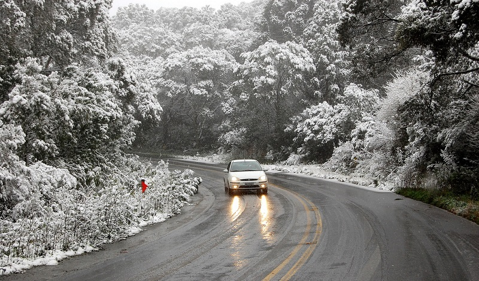

Fazendo divisa com o Chile, a cidade fica a cerca de 1.650 km da capital Argentina, Buenos Aires, em um local marcado pela natureza. Emoldurada por lagos e montanhas, Bariloche tem como sua principal atração um dos maiores espetáculos naturais do universo: a neve. A combinação perfeita do tempo e paisagem, portanto, resulta em um dos cenários mais recomendados para turistas em lua de mel, de férias com a família ou, até mesmo, com o sonho de curtir tudo o que o clima gelado pode oferecer. Em Bariloche as atividades praticadas em montanhas fazem parte da rotina dos moradores. Esportes como o snowboard, por exemplo, chamam a atenção de quem passa pela cidade – de preferência, sempre acompanhado de um bom par de esquis. Já para os interessados em turismo de aventura, opções como o rafting, trekking, ciclismo de montanha, cavalgada, voos de parapente e, é claro, os mais variados passeios por entre os bosques, lagos e montanhas da região são indicações essenciais
